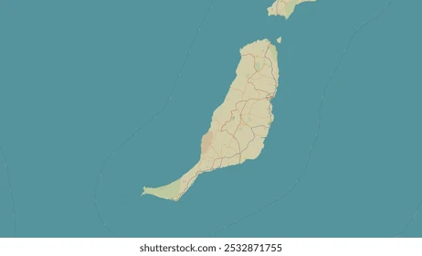
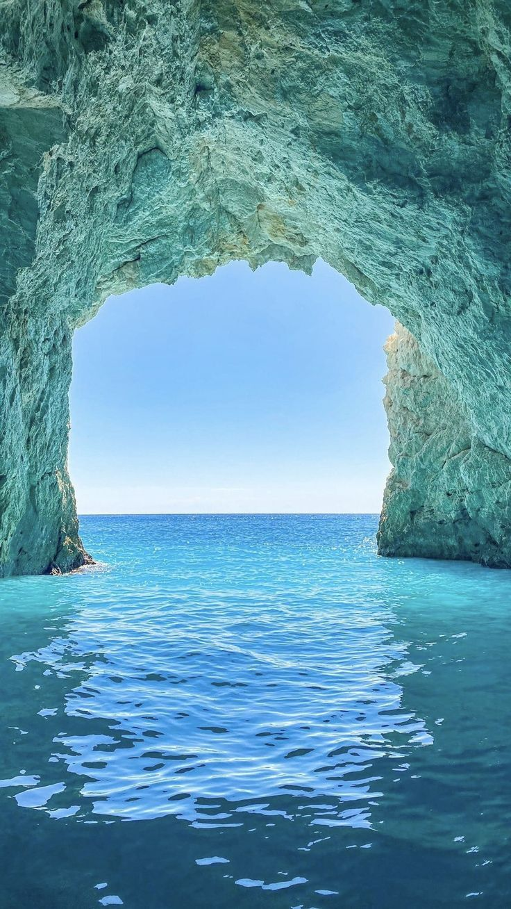
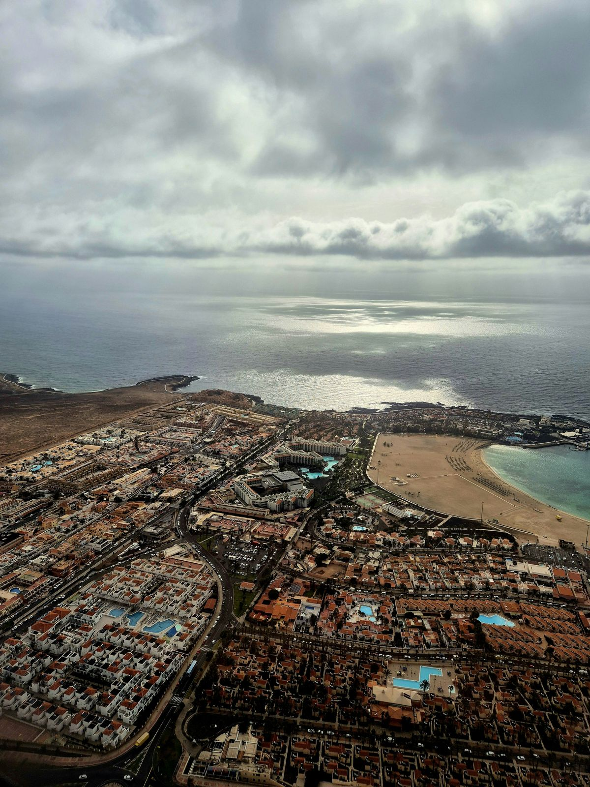
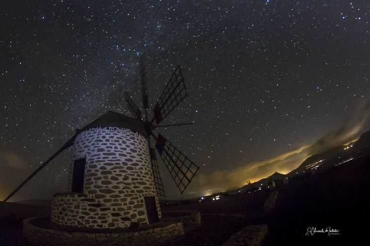
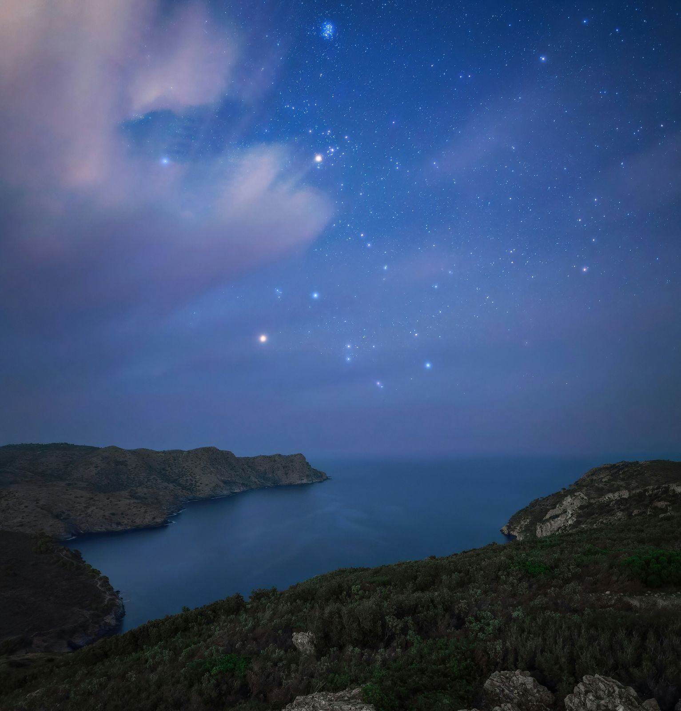
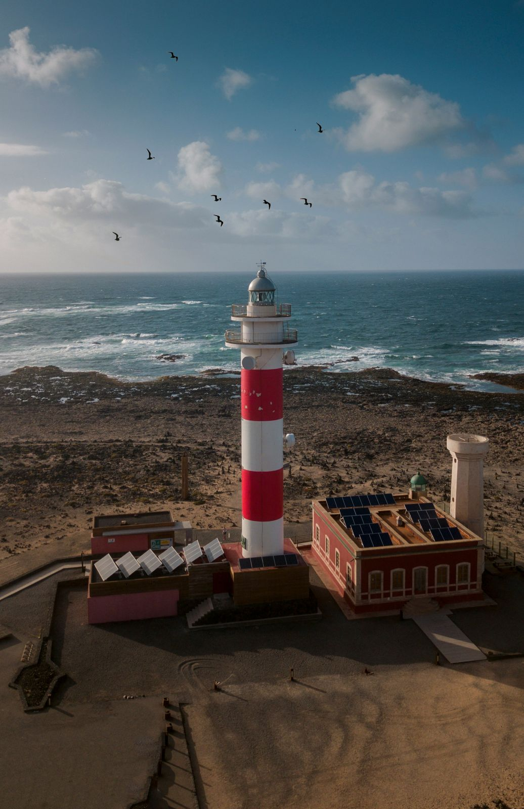
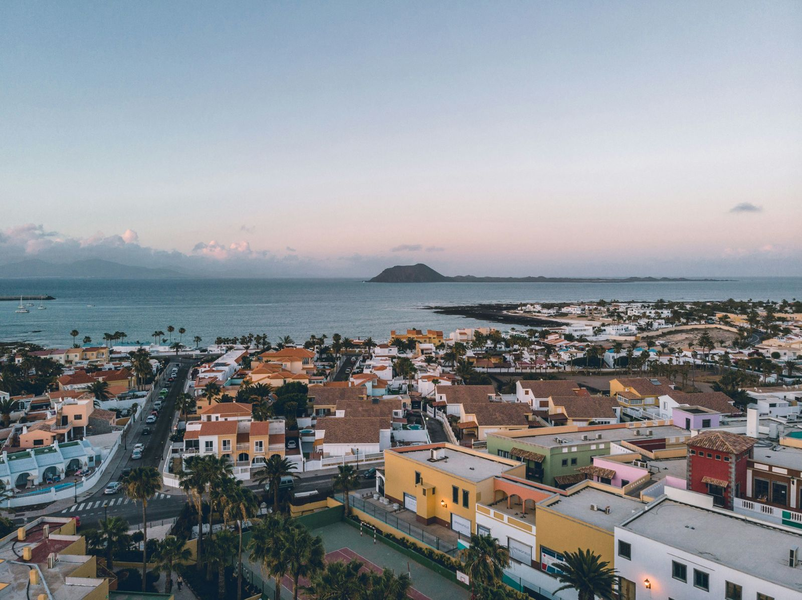

Mapa Interactivo de Destinos

Destinos Turísticos
1. Observación Astronómica

Disfruta de una noche mágica observando las estrellas con telescopios profesionales. Nuestros guías expertos te mostrarán constelaciones, planetas y la Vía Láctea.
- Telescopios profesionales incluidos
- Guías especializados en astronomía
- Zonas de mínima contaminación lumínica
2. Cuevas Marinas Secretas

Explora impresionantes cuevas marinas talladas por siglos de erosión. Aguas cristalinas de color turquesa te rodean mientras descubres formaciones rocosas únicas.
- Acceso en kayak o nadando
- Aguas cristalinas turquesas
- Formaciones geológicas únicas
3. Vista Panorámica Aérea

Contempla una vista aérea espectacular de la costa y la ciudad. Las nubes dramáticas y la luz del sol creando reflejos en el mar te dejarán sin aliento.
- Tours en helicóptero disponibles
- Miradores estratégicos en montañas
- Ideal para fotografía de paisajes
4. Molino Histórico bajo las Estrellas

Visita un molino histórico perfectamente conservado bajo un cielo estrellado. Una experiencia que combina historia, arquitectura tradicional y astronomía.
- Molino del siglo XVIII restaurado
- Tours nocturnos especiales
- Fotografía nocturna guiada
5. Costa Nocturna

Experimenta la magia de nuestras costas durante la noche. El cielo estrellado se refleja en las aguas tranquilas creando un espectáculo natural único.
- Caminatas nocturnas por la costa
- Observación de bioluminiscencia
- Ambiente romántico y tranquilo
6. Faro Histórico

Visita nuestro emblemático faro de rayas rojas y blancas. Desde su cima, disfruta de vistas panorámicas del océano y observa aves marinas en su hábitat natural.
- Faro del siglo XIX en funcionamiento
- Subida a la torre permitida
- Museo marítimo en la base
- Observación de aves marinas
7. Pueblo Costero Tradicional

Descubre la autenticidad de nuestros pueblos costeros con casas de colores vibrantes, playas de arena dorada y la isla de Lobos al fondo.
- Arquitectura canaria tradicional
- Gastronomía local auténtica
- Playas tranquilas y familiares
- Excursiones a Isla de Lobos